新三对：手部约束阶段消融
A 是恢复肩点后的 v2；B 仅移除刚体阶段的 WiLoR 二维和三角化三维手约束；C 在 B 上，将后续手部、腕环和前臂轮廓目标的直接梯度限制到锁骨、肩、肘、腕。Sapiens 身体腕点保留，身体和头部观测仍可调整整体。
六视角、固定自动观测，非人工真值。身体数值是六视角 RMSE 的均值，手部是十二个手／视角 RMSE 的均值。第 7 项未实施，原 MANO 替换与接缝融合保留。SMPL-X 手误差与融合手误差分别列出。
完整数值 JSON · 代码与报告
刚体与最终结果
| 阶段 / 组别 | 肩 RMSE px | 骨盆深度 m | 投影肩宽 px | 手 2D RMSE px | 手 3D RMSE mm |
|---|
| 刚体结束 / A | 153.95 | 0.888 | 263.7 | 35.70 | 157.84 |
| 刚体结束 / B | 140.31 | 0.851 | 271.5 | 41.68 | 207.01 |
| 刚体结束 / C | 140.31 | 0.851 | 271.5 | 41.68 | 207.01 |
| 最终融合 / A | 139.63 | 0.817 | 268.9 | 8.85 | 30.16 |
| 最终融合 / B | 127.88 | 0.793 | 283.5 | 8.96 | 27.77 |
| 最终融合 / C | 142.69 | 0.808 | 267.3 | 10.15 | 57.25 |
展开全部阶段均值
| 阶段 / 组别 | 肩 RMSE px | 骨盆深度 m | 投影肩宽 px | 手 2D RMSE px | 手 3D RMSE mm |
|---|
| 网络初值 / A | 153.67 | 0.590 | 498.1 | 1603.46 | 473.41 |
| 网络初值 / B | 153.67 | 0.590 | 498.1 | 1603.46 | 473.41 |
| 网络初值 / C | 153.67 | 0.590 | 498.1 | 1603.46 | 473.41 |
| 刚体结束 / A | 153.95 | 0.888 | 263.7 | 35.70 | 157.84 |
| 刚体结束 / B | 140.31 | 0.851 | 271.5 | 41.68 | 207.01 |
| 刚体结束 / C | 140.31 | 0.851 | 271.5 | 41.68 | 207.01 |
| 姿态结束 / A | 144.99 | 0.831 | 260.5 | 13.48 | 29.19 |
| 姿态结束 / B | 131.40 | 0.803 | 276.5 | 13.42 | 29.46 |
| 姿态结束 / C | 138.27 | 0.818 | 269.0 | 19.01 | 88.80 |
| 腕部细化 / A | 145.34 | 0.830 | 260.8 | 13.42 | 28.88 |
| 腕部细化 / B | 131.48 | 0.802 | 277.4 | 13.35 | 29.01 |
| 腕部细化 / C | 139.13 | 0.817 | 268.0 | 18.62 | 87.92 |
| 轮廓细化 / A | 144.00 | 0.830 | 260.5 | 14.40 | 30.85 |
| 轮廓细化 / B | 130.69 | 0.801 | 276.5 | 14.13 | 31.06 |
| 轮廓细化 / C | 140.11 | 0.819 | 266.2 | 18.93 | 89.60 |
| Guided 身体 / A | 139.63 | 0.817 | 268.9 | 14.01 | 30.07 |
| Guided 身体 / B | 127.88 | 0.793 | 283.5 | 13.67 | 30.21 |
| Guided 身体 / C | 142.69 | 0.808 | 267.3 | 19.25 | 79.07 |
| 最终融合 / A | 139.63 | 0.817 | 268.9 | 8.85 | 30.16 |
| 最终融合 / B | 127.88 | 0.793 | 283.5 | 8.96 | 27.77 |
| 最终融合 / C | 142.69 | 0.808 | 267.3 | 10.15 | 57.25 |
最终融合行使用替换后的 MANO 网格；其余行使用 SMPL-X 网格。三维腕点采用身体骨骼腕中心，其余手点由网格回归。C 隔离直接梯度，但候选评分、回退及身体／头部目标仍会间接影响整体位姿。
手部是否明显变差
预先约定的实用门槛：相对 A，融合手二维均值增加 ≤ 1 px、最差手／视角 ≤ 3 px；三维均值增加 ≤ 5 mm、最差手／视角 ≤ 15 mm。这不是统计显著性检验。
B：通过。二维均值变化 +0.11 px，最差 +1.23 px；三维均值变化 -2.39 mm，最差 +3.24 mm。
C：未通过。二维均值变化 +1.30 px，最差 +5.74 px；三维均值变化 +27.09 mm，最差 +308.52 mm。
其他检查
最终头部入画顶点合计：A 1615，B 2，C 3。局部表面检查通过视角：A 6/6、B 5/6、C 2/6。B 的 new_001 / cam4 左侧前臂／接缝局部检查发现 47 对相交面，因此 B 是有收益的候选方案，尚不能视为几何全面验收通过。局部检查证据及范围。
逐视角最终投影
new_001 · cam3
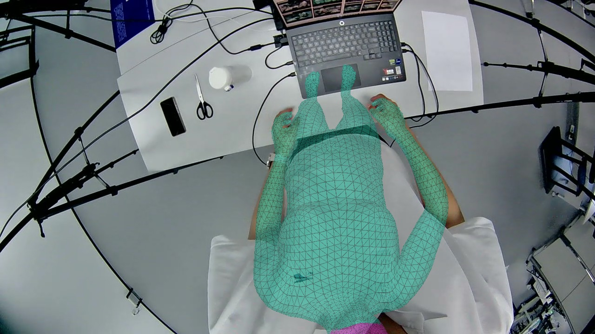
A · 当前 v2
肩 156.11 px · 深度 0.850 m · 肩宽 251.9 px
融合手 2D：left 8.32 / right 9.93 px
局部表面检查：通过
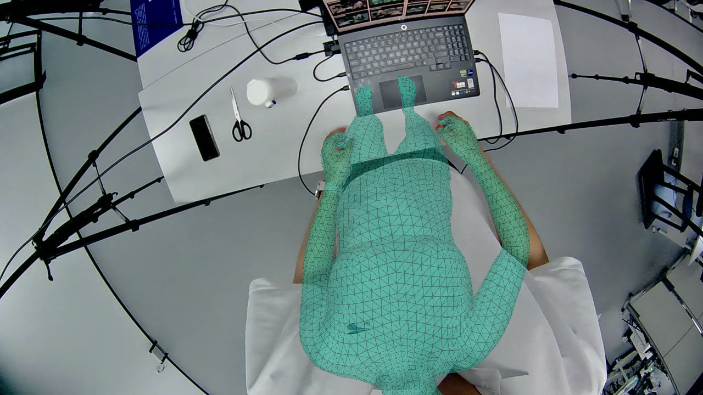
B · 刚体不用手约束
肩 152.97 px · 深度 0.843 m · 肩宽 255.3 px
融合手 2D：left 8.40 / right 10.17 px
局部表面检查：通过
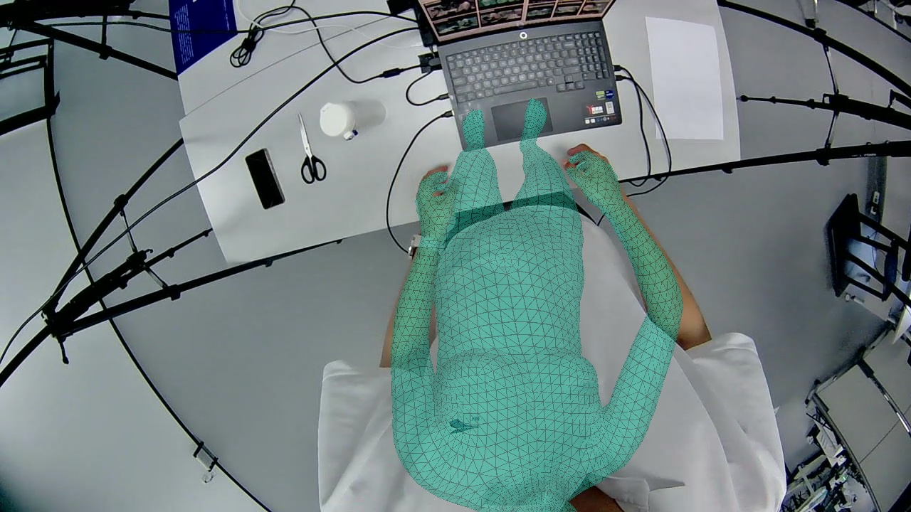
C · B + 手部梯度仅到手臂
肩 151.94 px · 深度 0.853 m · 肩宽 243.3 px
融合手 2D：left 8.35 / right 11.71 px
局部表面检查：未通过
该视角各阶段及左右手数值
| 阶段 / 组别 | 肩 px | 深度 m | 肩宽 px | 左手 2D px | 右手 2D px | 左手 3D mm | 右手 3D mm |
|---|
| 网络初值 / A | 184.05 | 0.573 | 489.4 | 631.84 | 801.46 | 604.13 | 586.44 |
| 网络初值 / B | 184.05 | 0.573 | 489.4 | 631.84 | 801.46 | 604.13 | 586.44 |
| 网络初值 / C | 184.05 | 0.573 | 489.4 | 631.84 | 801.46 | 604.13 | 586.44 |
| 刚体结束 / A | 150.75 | 0.921 | 247.8 | 22.08 | 28.29 | 171.18 | 190.02 |
| 刚体结束 / B | 144.21 | 0.866 | 248.9 | 27.56 | 36.85 | 241.48 | 281.81 |
| 刚体结束 / C | 144.21 | 0.866 | 248.9 | 27.56 | 36.85 | 241.48 | 281.81 |
| 姿态结束 / A | 158.87 | 0.860 | 247.2 | 6.75 | 12.88 | 22.96 | 30.51 |
| 姿态结束 / B | 152.27 | 0.852 | 250.5 | 7.02 | 12.63 | 22.59 | 29.95 |
| 姿态结束 / C | 144.39 | 0.841 | 243.4 | 10.82 | 14.34 | 25.82 | 58.22 |
| 腕部细化 / A | 157.79 | 0.857 | 248.5 | 6.60 | 12.69 | 21.82 | 29.69 |
| 腕部细化 / B | 151.96 | 0.851 | 251.3 | 6.97 | 12.57 | 21.92 | 29.24 |
| 腕部细化 / C | 143.98 | 0.842 | 243.3 | 10.59 | 15.15 | 25.14 | 63.70 |
| 轮廓细化 / A | 157.22 | 0.856 | 248.2 | 6.52 | 13.30 | 21.63 | 35.62 |
| 轮廓细化 / B | 153.23 | 0.850 | 250.0 | 6.90 | 13.92 | 22.34 | 38.82 |
| 轮廓细化 / C | 151.94 | 0.853 | 243.3 | 8.25 | 19.01 | 27.66 | 68.01 |
| Guided 身体 / A | 156.11 | 0.850 | 251.9 | 6.44 | 13.10 | 21.21 | 37.28 |
| Guided 身体 / B | 152.97 | 0.843 | 255.3 | 6.42 | 12.92 | 21.52 | 39.11 |
| Guided 身体 / C | 151.94 | 0.853 | 243.3 | 8.25 | 19.01 | 27.66 | 68.01 |
| 最终融合 / A | 156.11 | 0.850 | 251.9 | 8.32 | 9.93 | 27.73 | 15.25 |
| 最终融合 / B | 152.97 | 0.843 | 255.3 | 8.40 | 10.17 | 29.58 | 13.01 |
| 最终融合 / C | 151.94 | 0.853 | 243.3 | 8.35 | 11.71 | 20.75 | 28.94 |
new_001 · cam4
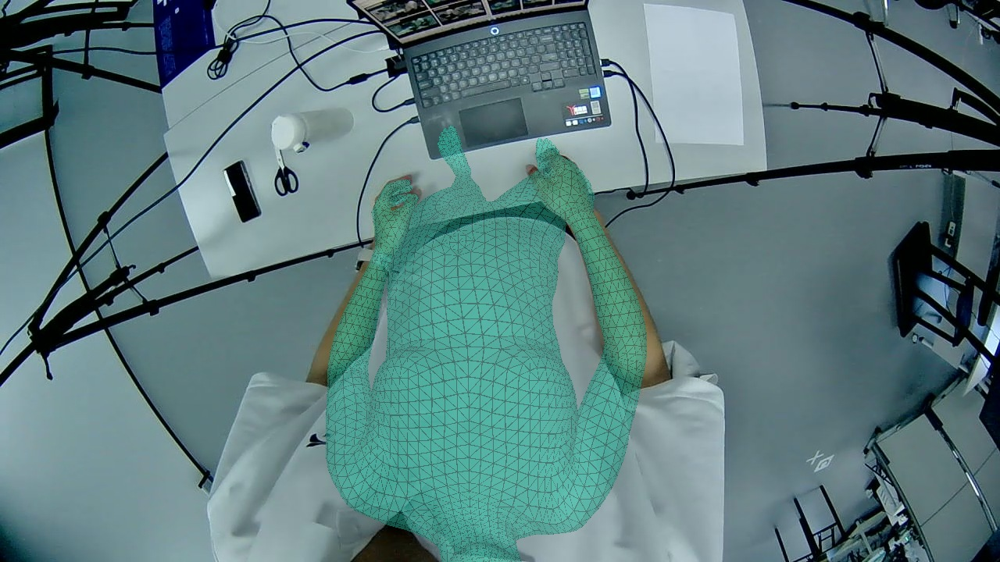
A · 当前 v2
肩 136.37 px · 深度 0.835 m · 肩宽 258.9 px
融合手 2D：left 5.60 / right 9.30 px
局部表面检查：通过
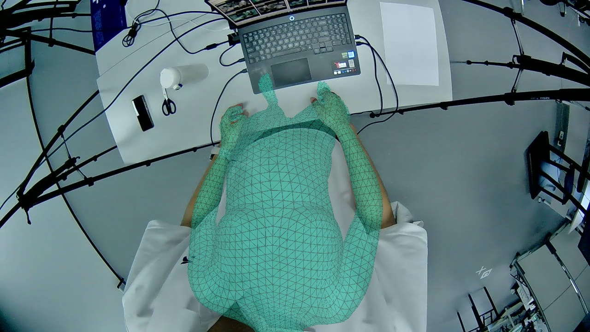
B · 刚体不用手约束
肩 123.89 px · 深度 0.800 m · 肩宽 275.8 px
融合手 2D：left 5.78 / right 8.31 px
局部表面检查：未通过
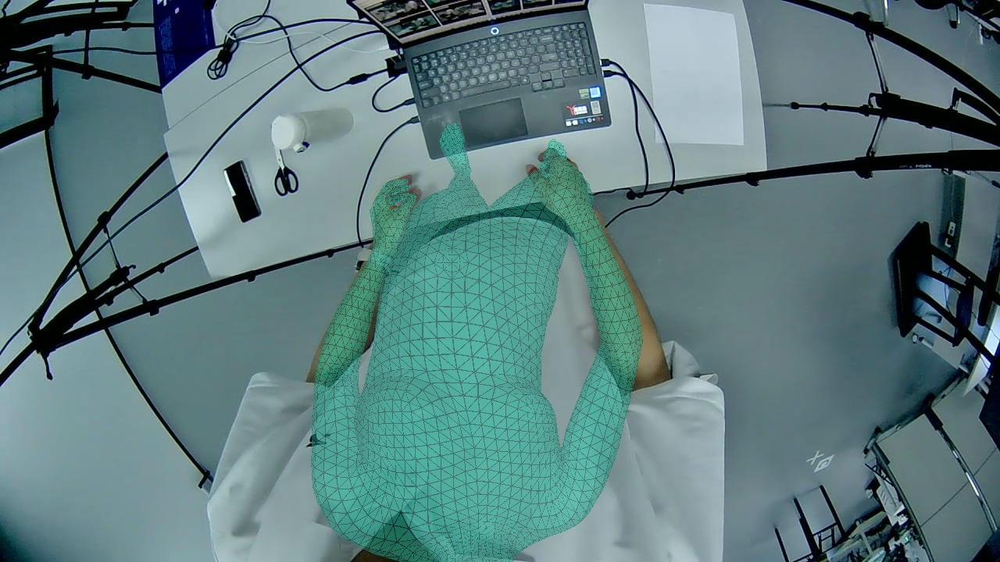
C · B + 手部梯度仅到手臂
肩 125.78 px · 深度 0.803 m · 肩宽 264.4 px
融合手 2D：left 6.66 / right 9.14 px
局部表面检查：通过
该视角各阶段及左右手数值
| 阶段 / 组别 | 肩 px | 深度 m | 肩宽 px | 左手 2D px | 右手 2D px | 左手 3D mm | 右手 3D mm |
|---|
| 网络初值 / A | 135.45 | 0.580 | 476.1 | 438.55 | 975.33 | 564.85 | 523.71 |
| 网络初值 / B | 135.45 | 0.580 | 476.1 | 438.55 | 975.33 | 564.85 | 523.71 |
| 网络初值 / C | 135.45 | 0.580 | 476.1 | 438.55 | 975.33 | 564.85 | 523.71 |
| 刚体结束 / A | 152.79 | 0.884 | 250.5 | 32.19 | 47.45 | 264.63 | 221.44 |
| 刚体结束 / B | 138.21 | 0.844 | 262.3 | 37.29 | 46.44 | 302.59 | 260.49 |
| 刚体结束 / C | 138.21 | 0.844 | 262.3 | 37.29 | 46.44 | 302.59 | 260.49 |
| 姿态结束 / A | 139.76 | 0.843 | 252.8 | 10.72 | 12.11 | 22.71 | 33.16 |
| 姿态结束 / B | 126.57 | 0.808 | 272.6 | 10.44 | 11.39 | 23.46 | 26.33 |
| 姿态结束 / C | 130.82 | 0.803 | 271.6 | 11.94 | 11.29 | 31.56 | 32.76 |
| 腕部细化 / A | 139.56 | 0.842 | 253.5 | 10.68 | 12.12 | 22.27 | 33.75 |
| 腕部细化 / B | 126.43 | 0.807 | 273.0 | 10.43 | 11.21 | 22.34 | 27.03 |
| 腕部细化 / C | 130.47 | 0.804 | 271.6 | 12.34 | 11.52 | 31.93 | 32.47 |
| 轮廓细化 / A | 138.94 | 0.843 | 252.8 | 11.84 | 12.61 | 24.23 | 29.43 |
| 轮廓细化 / B | 125.84 | 0.808 | 271.8 | 11.42 | 11.65 | 24.39 | 24.53 |
| 轮廓细化 / C | 125.78 | 0.803 | 264.4 | 13.67 | 15.38 | 51.85 | 31.39 |
| Guided 身体 / A | 136.37 | 0.835 | 258.9 | 9.48 | 11.02 | 23.52 | 30.31 |
| Guided 身体 / B | 123.89 | 0.800 | 275.8 | 9.19 | 10.61 | 23.53 | 24.04 |
| Guided 身体 / C | 125.78 | 0.803 | 264.4 | 13.67 | 15.38 | 51.85 | 31.39 |
| 最终融合 / A | 136.37 | 0.835 | 258.9 | 5.60 | 9.30 | 28.57 | 56.11 |
| 最终融合 / B | 123.89 | 0.800 | 275.8 | 5.78 | 8.31 | 22.49 | 42.35 |
| 最终融合 / C | 125.78 | 0.803 | 264.4 | 6.66 | 9.14 | 26.25 | 31.61 |
new_022 · cam3
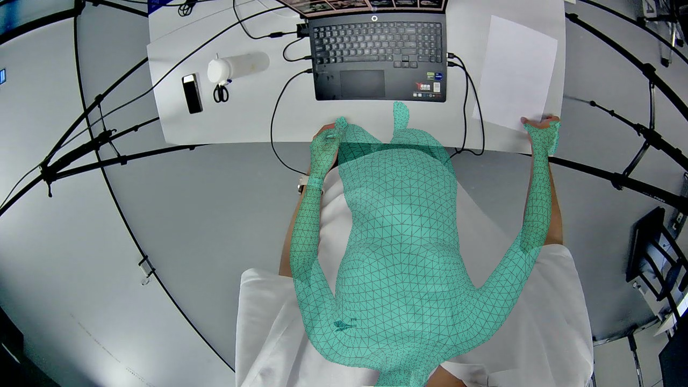
A · 当前 v2
肩 146.92 px · 深度 0.835 m · 肩宽 255.4 px
融合手 2D：left 9.72 / right 10.52 px
局部表面检查：通过
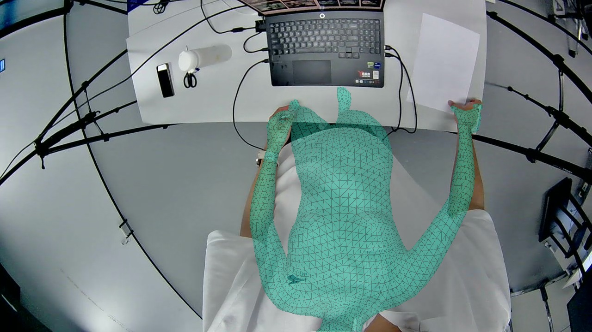
B · 刚体不用手约束
肩 147.33 px · 深度 0.836 m · 肩宽 252.2 px
融合手 2D：left 9.80 / right 10.29 px
局部表面检查：通过
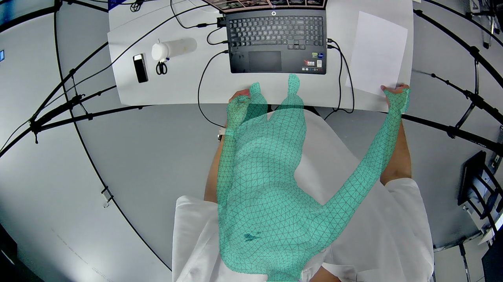
C · B + 手部梯度仅到手臂
肩 181.31 px · 深度 0.906 m · 肩宽 215.6 px
融合手 2D：left 13.05 / right 11.27 px
局部表面检查：未通过
该视角各阶段及左右手数值
| 阶段 / 组别 | 肩 px | 深度 m | 肩宽 px | 左手 2D px | 右手 2D px | 左手 3D mm | 右手 3D mm |
|---|
| 网络初值 / A | 173.35 | 0.563 | 507.5 | 457.49 | 2060.83 | 537.43 | 582.76 |
| 网络初值 / B | 173.35 | 0.563 | 507.5 | 457.49 | 2060.83 | 537.43 | 582.76 |
| 网络初值 / C | 173.35 | 0.563 | 507.5 | 457.49 | 2060.83 | 537.43 | 582.76 |
| 刚体结束 / A | 155.58 | 0.933 | 235.2 | 18.56 | 40.32 | 50.72 | 251.76 |
| 刚体结束 / B | 157.79 | 0.920 | 228.9 | 30.14 | 56.97 | 65.19 | 329.30 |
| 刚体结束 / C | 157.79 | 0.920 | 228.9 | 30.14 | 56.97 | 65.19 | 329.30 |
| 姿态结束 / A | 149.50 | 0.841 | 252.7 | 7.41 | 15.83 | 21.65 | 45.38 |
| 姿态结束 / B | 148.41 | 0.843 | 248.2 | 7.65 | 18.34 | 22.72 | 55.33 |
| 姿态结束 / C | 178.99 | 0.865 | 231.7 | 6.91 | 46.94 | 26.23 | 426.11 |
| 腕部细化 / A | 149.50 | 0.841 | 252.7 | 7.41 | 15.83 | 21.65 | 45.38 |
| 腕部细化 / B | 148.41 | 0.843 | 248.2 | 7.65 | 18.34 | 22.72 | 55.33 |
| 腕部细化 / C | 177.36 | 0.858 | 235.0 | 6.86 | 44.90 | 27.37 | 407.33 |
| 轮廓细化 / A | 147.87 | 0.844 | 248.8 | 8.42 | 19.20 | 23.43 | 51.27 |
| 轮廓细化 / B | 148.48 | 0.844 | 247.3 | 8.09 | 19.59 | 23.32 | 58.44 |
| 轮廓细化 / C | 178.04 | 0.860 | 234.3 | 6.69 | 44.67 | 25.97 | 409.44 |
| Guided 身体 / A | 146.92 | 0.835 | 255.4 | 7.47 | 20.07 | 21.33 | 51.40 |
| Guided 身体 / B | 147.33 | 0.836 | 252.2 | 7.25 | 20.76 | 21.98 | 60.54 |
| Guided 身体 / C | 181.31 | 0.906 | 215.6 | 8.59 | 62.64 | 45.16 | 482.25 |
| 最终融合 / A | 146.92 | 0.835 | 255.4 | 9.72 | 10.52 | 19.91 | 28.02 |
| 最终融合 / B | 147.33 | 0.836 | 252.2 | 9.80 | 10.29 | 22.42 | 31.26 |
| 最终融合 / C | 181.31 | 0.906 | 215.6 | 13.05 | 11.27 | 27.96 | 336.53 |
new_022 · cam4
 A · 当前 v2
A · 当前 v2
肩 142.38 px · 深度 0.822 m · 肩宽 274.6 px
融合手 2D：left 5.89 / right 8.90 px
局部表面检查：通过
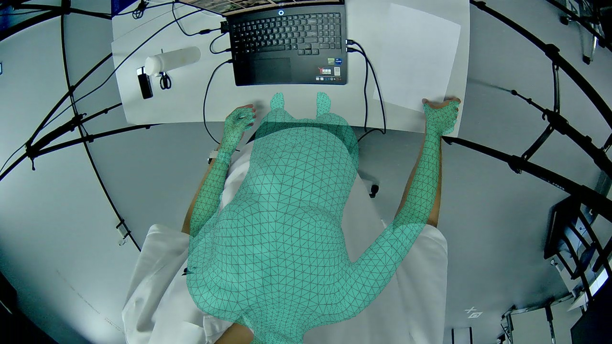
B · 刚体不用手约束
肩 136.28 px · 深度 0.809 m · 肩宽 281.0 px
融合手 2D：left 5.75 / right 8.82 px
局部表面检查：通过
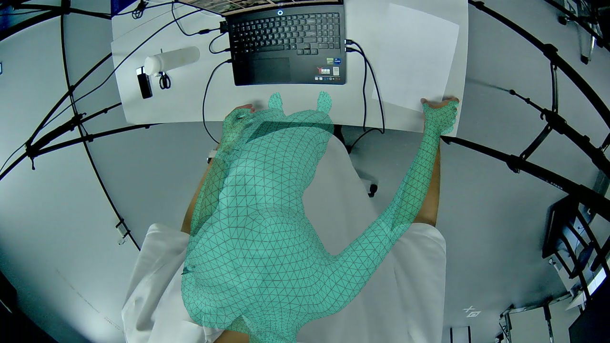
C · B + 手部梯度仅到手臂
肩 141.78 px · 深度 0.796 m · 肩宽 261.7 px
融合手 2D：left 7.52 / right 8.93 px
局部表面检查：未通过
该视角各阶段及左右手数值
| 阶段 / 组别 | 肩 px | 深度 m | 肩宽 px | 左手 2D px | 右手 2D px | 左手 3D mm | 右手 3D mm |
|---|
| 网络初值 / A | 148.22 | 0.590 | 493.2 | 279.37 | 11385.18 | 432.53 | 549.98 |
| 网络初值 / B | 148.22 | 0.590 | 493.2 | 279.37 | 11385.18 | 432.53 | 549.98 |
| 网络初值 / C | 148.22 | 0.590 | 493.2 | 279.37 | 11385.18 | 432.53 | 549.98 |
| 刚体结束 / A | 147.98 | 0.902 | 249.9 | 25.63 | 55.88 | 77.65 | 242.50 |
| 刚体结束 / B | 142.96 | 0.888 | 250.8 | 30.21 | 62.30 | 90.05 | 268.82 |
| 刚体结束 / C | 142.96 | 0.888 | 250.8 | 30.21 | 62.30 | 90.05 | 268.82 |
| 姿态结束 / A | 140.55 | 0.826 | 266.1 | 9.80 | 34.56 | 20.81 | 79.92 |
| 姿态结束 / B | 134.54 | 0.812 | 272.5 | 9.73 | 34.83 | 21.03 | 81.34 |
| 姿态结束 / C | 145.61 | 0.841 | 247.6 | 15.83 | 56.70 | 62.70 | 320.00 |
| 腕部细化 / A | 140.55 | 0.826 | 266.1 | 9.80 | 34.56 | 20.81 | 79.92 |
| 腕部细化 / B | 134.27 | 0.811 | 273.9 | 9.44 | 35.04 | 20.45 | 81.32 |
| 腕部细化 / C | 152.26 | 0.839 | 239.8 | 12.23 | 56.37 | 47.99 | 338.73 |
| 轮廓细化 / A | 142.09 | 0.829 | 265.3 | 11.60 | 34.72 | 25.31 | 82.94 |
| 轮廓细化 / B | 135.48 | 0.813 | 272.0 | 11.44 | 35.12 | 26.26 | 85.01 |
| 轮廓细化 / C | 152.40 | 0.839 | 239.7 | 11.91 | 54.20 | 46.18 | 339.03 |
| Guided 身体 / A | 142.38 | 0.822 | 274.6 | 9.59 | 37.51 | 25.57 | 77.79 |
| Guided 身体 / B | 136.28 | 0.809 | 281.0 | 9.29 | 37.32 | 25.88 | 78.78 |
| Guided 身体 / C | 141.78 | 0.796 | 261.7 | 10.04 | 38.51 | 42.38 | 121.10 |
| 最终融合 / A | 142.38 | 0.822 | 274.6 | 5.89 | 8.90 | 19.13 | 32.06 |
| 最终融合 / B | 136.28 | 0.809 | 281.0 | 5.75 | 8.82 | 19.10 | 33.58 |
| 最终融合 / C | 141.78 | 0.796 | 261.7 | 7.52 | 8.93 | 24.99 | 81.13 |
new_100 · cam3
 A · 当前 v2
A · 当前 v2
肩 143.32 px · 深度 0.787 m · 肩宽 272.8 px
融合手 2D：left 10.01 / right 9.20 px
局部表面检查：通过
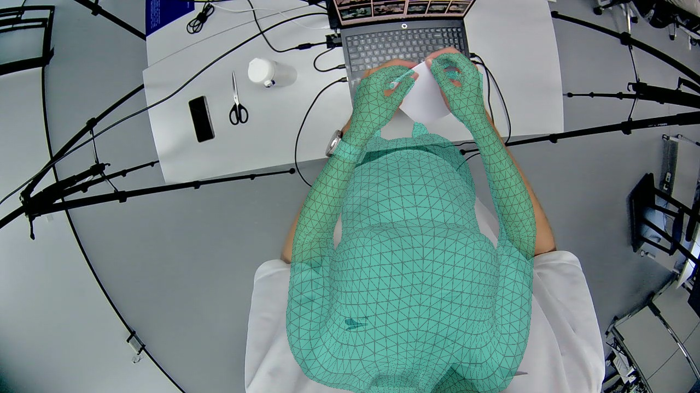
B · 刚体不用手约束
肩 118.52 px · 深度 0.737 m · 肩宽 301.8 px
融合手 2D：left 9.91 / right 10.43 px
局部表面检查：通过
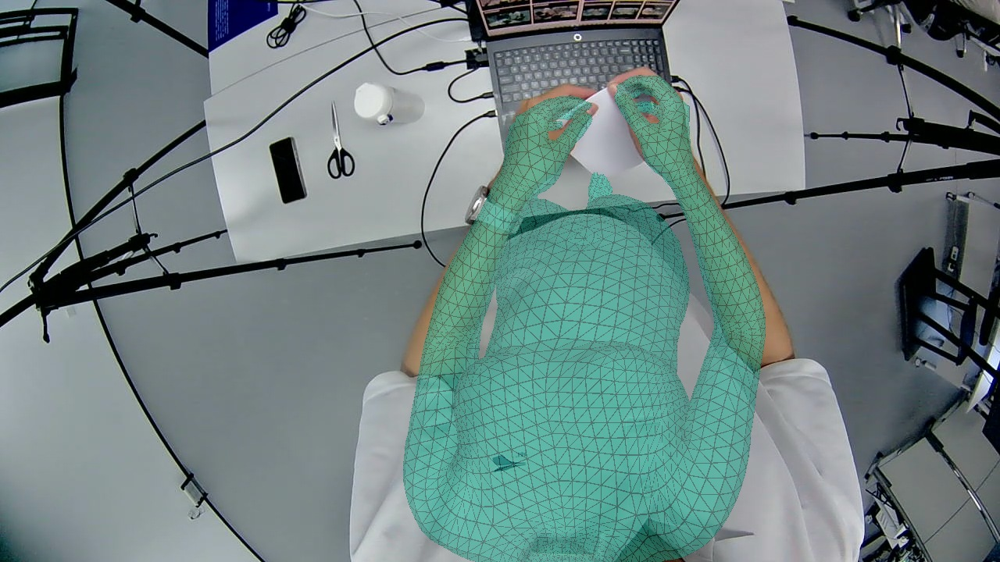
C · B + 手部梯度仅到手臂
肩 133.06 px · 深度 0.748 m · 肩宽 303.7 px
融合手 2D：left 12.17 / right 10.03 px
局部表面检查：通过
该视角各阶段及左右手数值
| 阶段 / 组别 | 肩 px | 深度 m | 肩宽 px | 左手 2D px | 右手 2D px | 左手 3D mm | 右手 3D mm |
|---|
| 网络初值 / A | 157.03 | 0.619 | 495.7 | 469.43 | 868.15 | 341.91 | 353.60 |
| 网络初值 / B | 157.03 | 0.619 | 495.7 | 469.43 | 868.15 | 341.91 | 353.60 |
| 网络初值 / C | 157.03 | 0.619 | 495.7 | 469.43 | 868.15 | 341.91 | 353.60 |
| 刚体结束 / A | 169.30 | 0.850 | 288.3 | 29.90 | 40.18 | 93.83 | 118.40 |
| 刚体结束 / B | 143.88 | 0.800 | 306.7 | 29.47 | 44.85 | 150.24 | 177.15 |
| 刚体结束 / C | 143.88 | 0.800 | 306.7 | 29.47 | 44.85 | 150.24 | 177.15 |
| 姿态结束 / A | 155.03 | 0.815 | 257.9 | 9.65 | 12.74 | 14.24 | 25.62 |
| 姿态结束 / B | 126.42 | 0.755 | 292.3 | 9.13 | 12.50 | 13.86 | 23.31 |
| 姿态结束 / C | 120.96 | 0.783 | 296.1 | 9.61 | 12.51 | 14.49 | 29.89 |
| 腕部细化 / A | 157.10 | 0.814 | 257.8 | 9.57 | 12.63 | 14.25 | 24.73 |
| 腕部细化 / B | 127.78 | 0.753 | 293.0 | 9.07 | 12.34 | 13.88 | 21.62 |
| 腕部细化 / C | 121.67 | 0.781 | 294.8 | 9.66 | 12.35 | 15.04 | 27.58 |
| 轮廓细化 / A | 154.15 | 0.812 | 261.2 | 9.63 | 14.69 | 14.12 | 28.91 |
| 轮廓细化 / B | 124.12 | 0.747 | 295.0 | 9.17 | 14.17 | 13.54 | 22.43 |
| 轮廓细化 / C | 123.12 | 0.782 | 293.5 | 9.81 | 12.93 | 14.49 | 24.75 |
| Guided 身体 / A | 143.32 | 0.787 | 272.8 | 9.96 | 16.09 | 13.58 | 26.68 |
| Guided 身体 / B | 118.52 | 0.737 | 301.8 | 9.54 | 15.07 | 12.99 | 22.10 |
| Guided 身体 / C | 133.06 | 0.748 | 303.7 | 10.83 | 15.33 | 17.13 | 22.66 |
| 最终融合 / A | 143.32 | 0.787 | 272.8 | 10.01 | 9.20 | 34.20 | 16.43 |
| 最终融合 / B | 118.52 | 0.737 | 301.8 | 9.91 | 10.43 | 29.52 | 15.21 |
| 最终融合 / C | 133.06 | 0.748 | 303.7 | 12.17 | 10.03 | 24.44 | 16.64 |
new_100 · cam4
 A · 当前 v2
A · 当前 v2
肩 112.66 px · 深度 0.776 m · 肩宽 299.9 px
融合手 2D：left 9.62 / right 9.18 px
局部表面检查：通过
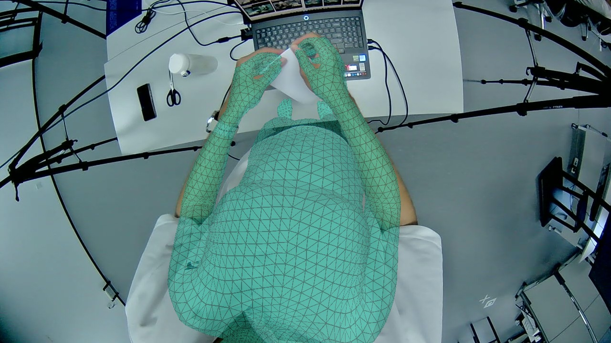
B · 刚体不用手约束
肩 88.30 px · 深度 0.731 m · 肩宽 334.7 px
融合手 2D：left 10.61 / right 9.23 px
局部表面检查：通过
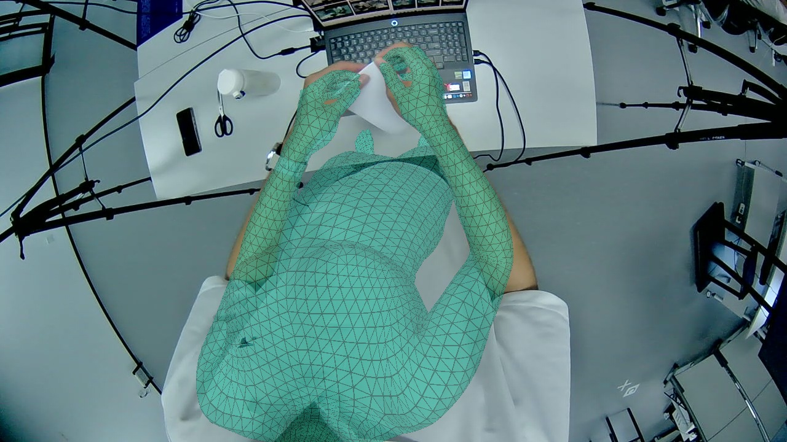
C · B + 手部梯度仅到手臂
肩 122.26 px · 深度 0.741 m · 肩宽 314.7 px
融合手 2D：left 15.35 / right 7.62 px
局部表面检查：未通过
该视角各阶段及左右手数值
| 阶段 / 组别 | 肩 px | 深度 m | 肩宽 px | 左手 2D px | 右手 2D px | 左手 3D mm | 右手 3D mm |
|---|
| 网络初值 / A | 123.89 | 0.614 | 526.7 | 424.25 | 449.59 | 323.20 | 280.32 |
| 网络初值 / B | 123.89 | 0.614 | 526.7 | 424.25 | 449.59 | 323.20 | 280.32 |
| 网络初值 / C | 123.89 | 0.614 | 526.7 | 424.25 | 449.59 | 323.20 | 280.32 |
| 刚体结束 / A | 147.33 | 0.837 | 310.3 | 33.22 | 54.76 | 121.17 | 90.72 |
| 刚体结束 / B | 114.81 | 0.787 | 331.3 | 39.16 | 58.98 | 175.77 | 141.17 |
| 刚体结束 / C | 114.81 | 0.787 | 331.3 | 39.16 | 58.98 | 175.77 | 141.17 |
| 姿态结束 / A | 126.23 | 0.802 | 286.0 | 15.97 | 13.33 | 14.53 | 18.76 |
| 姿态结束 / B | 100.20 | 0.752 | 322.7 | 14.37 | 12.99 | 16.77 | 16.84 |
| 姿态结束 / C | 108.81 | 0.777 | 323.3 | 17.70 | 13.57 | 19.28 | 18.47 |
| 腕部细化 / A | 127.54 | 0.801 | 286.1 | 15.84 | 13.29 | 14.07 | 18.20 |
| 腕部细化 / B | 100.02 | 0.748 | 325.2 | 14.19 | 12.89 | 16.39 | 15.90 |
| 腕部细化 / C | 109.04 | 0.777 | 323.2 | 18.18 | 13.32 | 20.18 | 17.52 |
| 轮廓细化 / A | 123.72 | 0.799 | 286.6 | 15.70 | 14.56 | 14.52 | 18.80 |
| 轮廓细化 / B | 97.01 | 0.744 | 323.2 | 14.46 | 13.65 | 17.01 | 16.58 |
| 轮廓细化 / C | 109.35 | 0.778 | 322.1 | 17.13 | 13.55 | 18.74 | 17.67 |
| Guided 身体 / A | 112.66 | 0.776 | 299.9 | 13.72 | 13.73 | 14.19 | 17.97 |
| Guided 身体 / B | 88.30 | 0.731 | 334.7 | 12.53 | 13.16 | 15.83 | 16.21 |
| Guided 身体 / C | 122.26 | 0.741 | 314.7 | 14.58 | 14.13 | 22.10 | 17.14 |
| 最终融合 / A | 112.66 | 0.776 | 299.9 | 9.62 | 9.18 | 49.88 | 34.63 |
| 最终融合 / B | 88.30 | 0.731 | 334.7 | 10.61 | 9.23 | 44.40 | 30.37 |
| 最终融合 / C | 122.26 | 0.741 | 314.7 | 15.35 | 7.62 | 36.22 | 31.52 |